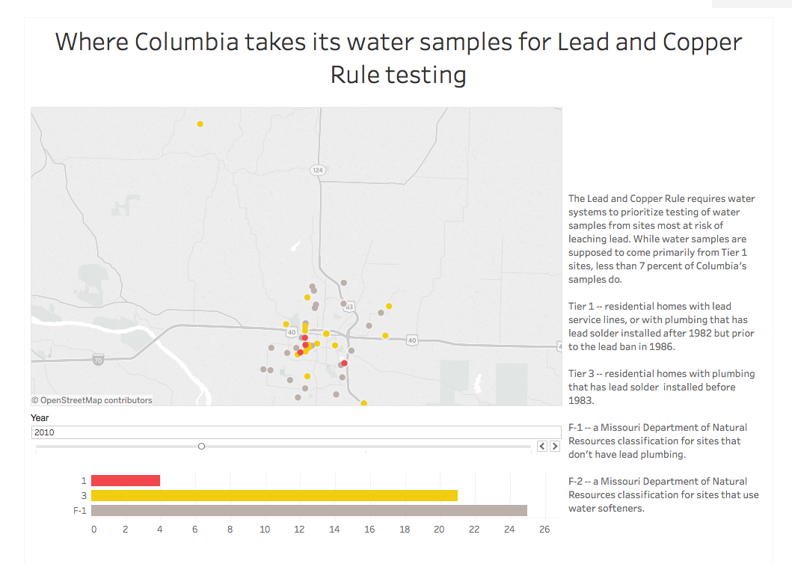

<div>
  <h1 class="header">Jennifer Lu</h1>
  <p class="header"> Journalist</p>
  <p class="center">
    <a href='mailto:jen.penned@gmail.com'>Email</a> | <a href="https://twitter.com/jenpenned">Twitter</a>
    | <a href="https://instagram.com/jenpenned">Instagram</a>
  </p>
</div>


<!--  -->
<!-- <figcaption>
   <h2>How coronaviruses replicate</h2>
   <p>blah blah blah </p>
   <a href="https://www.latimes.com/projects/how-coronavirus-invade-cells-replicates/" target='_blank' ></a>
</figcaption> -->


<!--  -->
  <!-- <figcaption>
    <h2>Sampling for lead in Columbia's drinking water</h2>
    <p>When testing for lead and copper contaminants in the public drinking water, utilities are supposed to take water samples from homes at high risk for lead contamination. Less than 7 percent of water samples taken by the city of Columbia, MO in the last decade came from such homes. </p>
    <a href="https://www.columbiamissourian.com/news/local/city-testing-system-not-focused-on-highest-risk-areas-for/article_3a64584a-0f1c-11e7-9343-8b50e97bd6e1.html" target='_blank' ></a>
  </figcaption> -->
